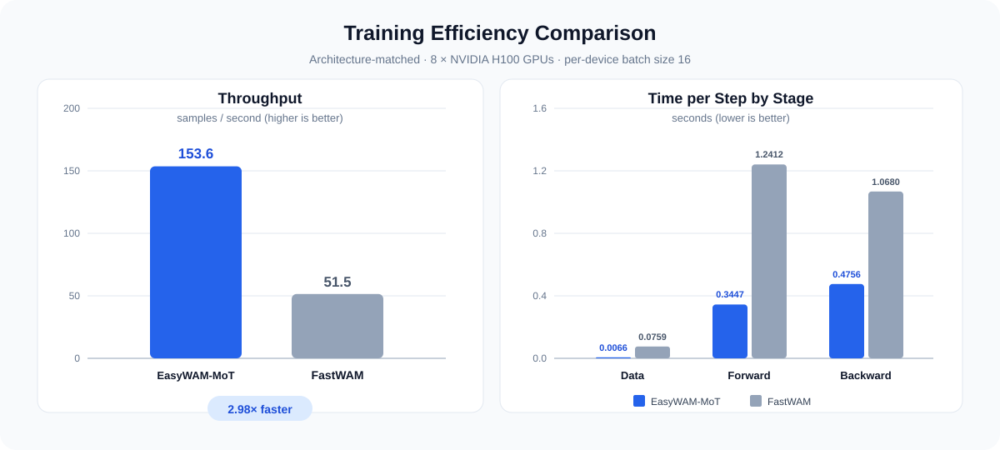

Five architectures.
One workflow.
Unified, MoT, MoT-Joint, MoT-IDM and Hidden share data, training, checkpoint and evaluation interfaces.
A unified research codebase
EasyWAM connects modular World Action Models, data processing, distributed training, parameter-efficient fine-tuning and scalable evaluation in one reproducible workflow.
01 / overview
From sparse video decoding to resumable evaluation, EasyWAM makes the entire WAM loop inspectable and repeatable.

Unified, MoT, MoT-Joint, MoT-IDM and Hidden share data, training, checkpoint and evaluation interfaces.
Wan2.2-TI2V-5B, Cosmos-Predict2.5-2B and FLUX.2 Klein-4B, with full-parameter training and LoRA fine-tuning.
FlashAttention 2/3/4, sparse video decoding, text and prompt caches, DeepSpeed ZeRO, dynamic inference batches and resumable evaluation.
LIBERO, LIBERO-Plus, RoboTwin, RoboDojo and RoboCasa365, with distributed evaluation and result summaries.
02 / results
Task success rates (%), higher is better. Results may vary with checkpoints, seeds and evaluation settings.
| Model | Spatial | Object | Goal | LIBERO-10 | Avg. |
|---|---|---|---|---|---|
| EasyWAM-Unified | 98.4 | 98.8 | 99.2 | 98.0 | 98.6 |
| EasyWAM-MoT | 97.0 | 99.2 | 96.6 | 94.0 | 96.7 |
| EasyWAM-Hidden | 99.2 | 100.0 | 97.8 | 98.2 | 98.8 |
| Model | Spatial | Object | Goal | LIBERO-10 | Avg. |
|---|---|---|---|---|---|
| EasyWAM-Unified | 91.2 | 98.8 | 91.8 | 66.2 | 87.0 |
| EasyWAM-MoT | 96.8 | 99.6 | 97.4 | 90.0 | 95.9 |
| EasyWAM-Hidden | 98.0 | 99.8 | 89.4 | 86.6 | 93.5 |
| Model | Spatial | Object | Goal | LIBERO-10 | Avg. |
|---|---|---|---|---|---|
| EasyWAM-Unified | 97.8 | 99.4 | 97.0 | 93.0 | 96.8 |
| EasyWAM-MoT | 98.0 | 98.4 | 98.4 | 95.6 | 97.6 |
| EasyWAM-Hidden | 97.2 | 98.8 | 96.0 | 95.0 | 96.8 |
| Model | Orig | Background | Camera | Language | Layout | Light | Noise | Robot | Avg. |
|---|---|---|---|---|---|---|---|---|---|
| EasyWAM-Unified | 98.6 | 72.3 | 54.8 | 93.7 | 83.4 | 97.0 | 72.0 | 83.4 | 79.0 |
| EasyWAM-MoT | 96.7 | 64.5 | 45.5 | 71.4 | 80.1 | 94.7 | 78.5 | 71.5 | 71.7 |
| EasyWAM-Hidden | 98.8 | 59.3 | 57.0 | 93.2 | 84.3 | 95.0 | 70.8 | 83.7 | 77.6 |
| Model | Orig | Background | Camera | Language | Layout | Light | Noise | Robot | Avg. |
|---|---|---|---|---|---|---|---|---|---|
| EasyWAM-Unified | 96.8 | 72.7 | 63.7 | 90.1 | 82.6 | 89.2 | 72.1 | 79.2 | 78.2 |
| EasyWAM-MoT | 97.6 | 60.7 | 75.1 | 92.3 | 82.6 | 92.6 | 81.3 | 58.5 | 77.7 |
| EasyWAM-Hidden | 96.8 | 59.5 | 65.9 | 92.6 | 85.0 | 89.1 | 68.3 | 82.5 | 77.8 |
LIBERO-Plus uses LIBERO checkpoints and tests changes to background, camera, language, layout, lighting, noise and robot appearance.
On 8 × NVIDIA H100 GPUs, EasyWAM-MoT reaches 138.2 samples/s versus FastWAM's 51.5 samples/s: 2.68× throughput. A 20,000-step LIBERO run takes about 5 hours instead of 14 under the reported setup.

Read the complete results ↗03 / get started
Follow the maintained guides on the main branch for commands, configuration and simulator setup.
Install the environment and prepare a backbone.
Open guide ↗ 02 / TRAINChoose a model, task configuration and distributed launcher.
Open guide ↗ 03 / EVALUATESet up LIBERO, RoboTwin, RoboDojo or RoboCasa365 evaluation.
Open guide ↗ 04 / MODELSBrowse released EasyWAM model checkpoints.
View models ↗04 / contributing
EasyWAM grows through shared recipes, careful benchmarks and practical fixes. Whether you are adding a model, improving a dataloader or writing your first issue, there is a place for your work here.
Open an issue ↗Models · Data · Training · Evaluation
Fork, branch, test and document the change.
Open a pull request. We review with care.
$ git clone https://github.com/OpenMOSS/EasyWAMContact us and build EasyWAM together — start a discussion ↗